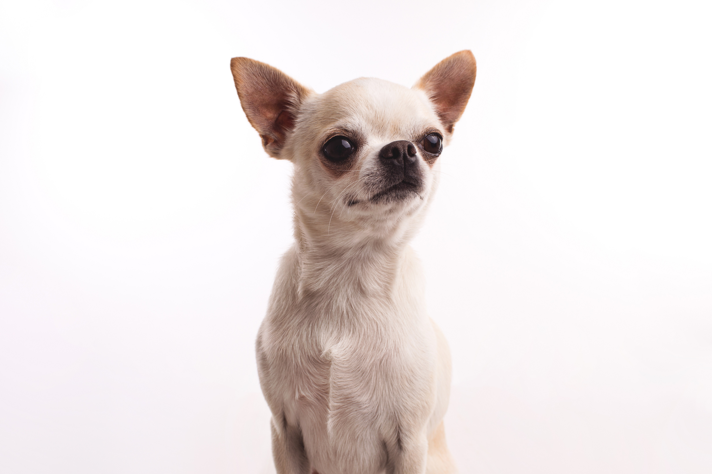

一、黃金獵犬
黃金獵犬友善忠誠，被稱為狗界大暖男，擁有一隻黃金獵犬，其實是相當療癒的，但在台灣的潮濕天氣之下，照顧起來比較需要花一番心力。

二、巴哥犬
巴哥犬是一種親人、活潑但需要細心照顧的小型犬，適合喜歡與寵物親密互動的家庭或個人。由於牠們容易發胖、短鼻導致呼吸問題，飼主需要特別注意飲食控制、健康管理與運動量。

三、吉娃娃
別被吉娃娃嬌小的體型騙了，這種狗狗可是擁有「小狗身、大狗魂」的代表！如果你曾經見過吉娃娃，一定會發現牠們的個性有兩種極端——要嘛超級黏人，無時無刻想窩在你懷裡撒嬌；要嘛氣場驚人，對陌生人毫不客氣，甚至比大狗還要愛吠！
